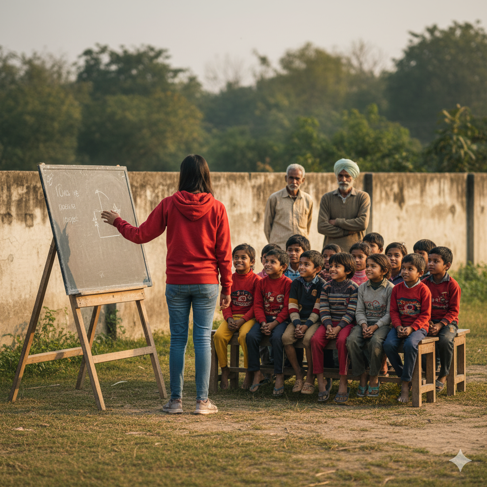
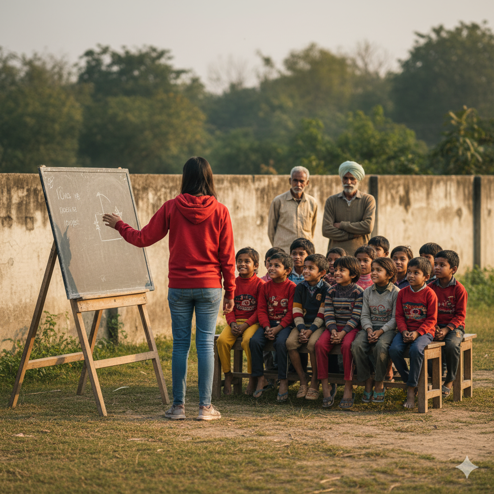

OUR HISTORY
Founded in 2017, Jamuna Foundation has been dedicated to changing
and shaping lives through impactful community service. From our
humble beginnings, we have grown into a trusted NGO committed to
addressing some of society’s biggest challenges.
Over the years, we have launched initiatives for women’s
self-employment, adult education, digital empowerment, and skill
development under national programs like Digital India and Pradhan
Mantri Kaushal Vikas Yojana (PMKVY).
Our journey reflects a consistent commitment to empowering
individuals and building stronger, more self-reliant communities.
 

OUR VISION
Our vision is to create an inclusive and empowered society where
every individual has access to education, skills, healthcare, and
opportunities for growth.
We aim to eliminate barriers that prevent people from realizing
their potential, whether through vocational training, health
services, environmental action, or social justice advocacy.
We envision a future where poverty is reduced, dignity is preserved,
and communities work together for sustainable progress.